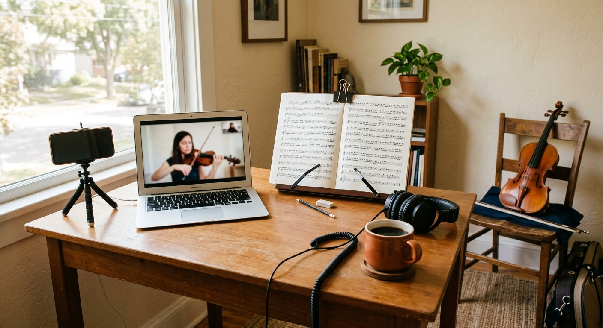

02 / 06
- 01Essential Excerpts MembershipThe flagship audition program — video tutorials, annotated sheet music, bi-monthly live Zoom calls.
- 02ArtistWorks Online InstructionHundreds of interactive classical violin lessons with sheet music and play-along tracks.
- 03Institute for College ReadinessAudition programmes, school selection, teacher choice and repertoire — the years after high school.
- 04Private lessons — studio & onlineBryn Mawr, PA · Melbourne, FL · or wherever you are, on a scheduled weekly call.
03 / 06
Membership · 01
Essential
Excerpts
Designed for violinists seeking to master orchestral excerpts and win audition positions in professional orchestras.
Get insider knowledge from a Philadelphia Orchestra member with 25+ years of audition coaching experience. Access comprehensive video tutorials, professional sheet music with audition-standard bowings, bi-monthly live Zoom calls, and a supportive community of fellow auditioners.
- Professional violinists preparing for orchestral auditions
- Advanced students seeking to master standard orchestral excerpts
- Musicians wanting insider knowledge of what audition committees listen for
- Players looking for ongoing support through live sessions and community feedback
- Violinists ready to avoid the mistakes that eliminate 90% of audition candidates

tutorials
Every standard excerpt, played, slowed down and explained.
Zoom
Bi-monthly calls — questions, mock rounds, committee feedback.
“The studio's deep knowledge of the repertoire — solo and orchestral — gives students a major advantage when competing for spots in college and/or orchestras.”
Amoroso Violin Studio
04 / 06
Online · 02
ArtistWorks
online instruction
Classical violin with Richard Amoroso
Richard has developed a rich library with hundreds of online classical violin lessons. Students have unlimited access to the interactive lessons including sheet music and play-along tracks. Learn how to play classical violin from a virtuoso.
- Explore the massive lesson library covering the key fundamentals of playing
- Lessons range from beginner to intermediate to advanced in the curriculum
- Send videos through the Video Exchange Program and receive timely feedback
- Watch the lessons and feedback shared with the ArtistWorks violin community

Video Exchange05 / 06
For students · 03
Institute for
College Readiness
The studio also has a deep knowledge of the college decision. From selecting the proper school and teacher to selecting the appropriate repertoire, each student receives the information vital to the years after high school.
- STEP 01Build the audition programmeTwo concertos, solo Bach, an étude, orchestral excerpts and scales — assembled to your calendar.
- STEP 02Shortlist schools & teachersConservatory, university or double-degree — matched to how you actually work.
- STEP 03Scholarship auditionsPreparation for merit competitions and the recordings schools require before December.
- STEP 04Decide with the full pictureOffers, fit, faculty, and the money — weighed together, not one at a time.

Also in this studio
Private lessons — weekly, in Bryn Mawr or Melbourne, and online for students outside Pennsylvania.
Enquire about availability06 / 06
Before you join
Common questions
Enrolment, level, equipment and what a live call actually looks like.